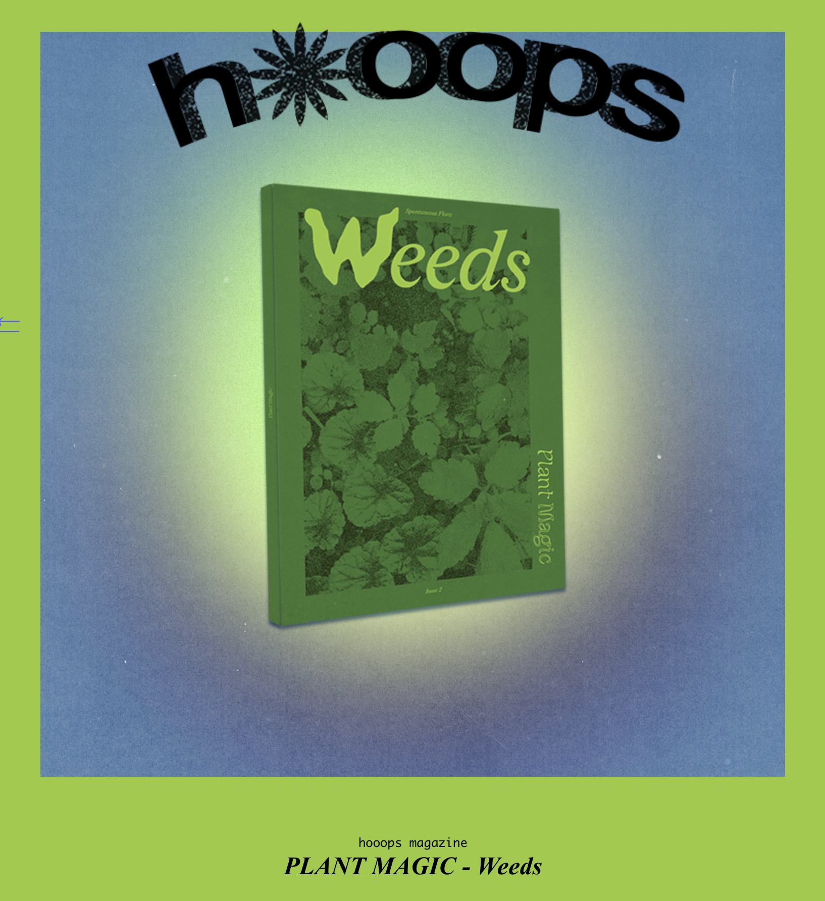
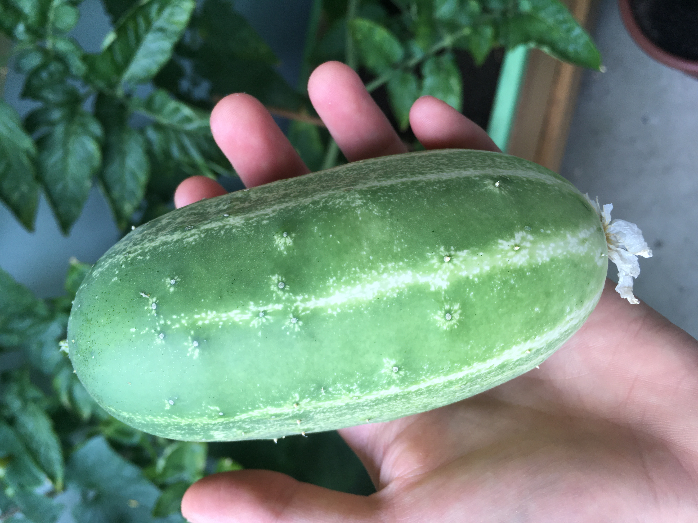

I sometimes contribute to Hooops ; a garden of fantastic plants and substances. Here is a link to their latest publication, 'Weeds' 2024, where I contributed a small insert on how to make Nettle twine.


Kleingarten Berlin. 2021 ~ 2024
Apple trees / cherry trees / Walnut tree.
Falling Fruit
